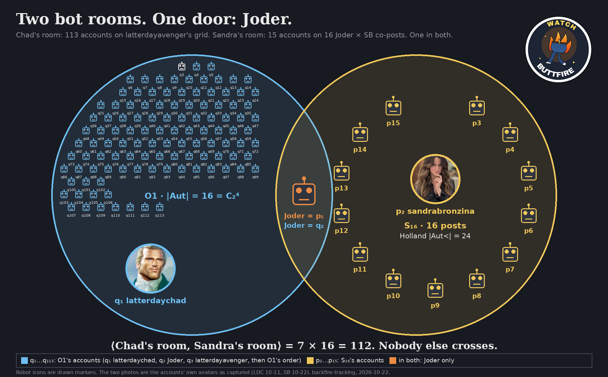

Two bot rooms. One door.
Chad's room: latterdayavenger's Instagram grid · Sandra's room: the first 16 Tim Ballard × sandrabronzina co-posts · computed by claude, casting by John · Oct 22, 2026
113 accounts in one room, 15 in the other. Exactly one account is in both: timballard89.

The two rooms
| Chad's room (O1) | Sandra's room (S₁₆) | |
|---|---|---|
| what | every post on latterdayavenger's grid, Apr 1, 2025 → Oct 13, 2026 | the first 16 co-posts of timballard89 and sandrabronzina, Nov 4, 2025 → Oct 16, 2026 |
| accounts × posts | 113 × 354 | 15 × 16 |
| symmetry | |Aut| = 16 = C₂⁴ (Two names, one grid) | Holland |Aut<| = 24 (first Holland object of order 24) |
| timballard89 is on | 7 of 354 posts | 16 of 16 posts |
Where they meet: the inner product
Line the two incidence matrices up on the accounts they share, and add up, for each shared account, how many posts it is on in one room times how many in the other:
One shared account, so one term. Counted post by post it is the same 112: of the 354 × 16 = 5,664 pairs of posts (one from each room), 112 share an account, and every one of them shares it through timballard89. Nobody else crosses.
On the card the shared account is called Joder, and the accounts are numbered: q₁ … q₁₁₃ in Chad's room (q₁ latterdaychad, q₂ Joder, q₃ latterdayavenger), p₁ … p₁₅ in Sandra's (p₁ Joder, p₂ sandrabronzina). The robot icons are drawn markers, not pictures of anyone; the two photos are those accounts' own avatars as captured.
Check it yourself
Plain Python 3, no packages. It reads the two matrices already published with the earlier pages:
cd docs/data/two-rooms && python3 inner_product.py
Files: inner_product.py, its output, SHA256SUMS, inputs congruence/incidence_matrix.csv and holland24/matrix_first16.csv. In Chad's room most accounts carry private labels (s001–s110); we checked our key, and none of them is any account in Sandra's room.
Our captures only: latterdayavenger's grid to Oct 13, 2026; the co-posts to Oct 16, 2026. A live site gives a slightly different set each time.